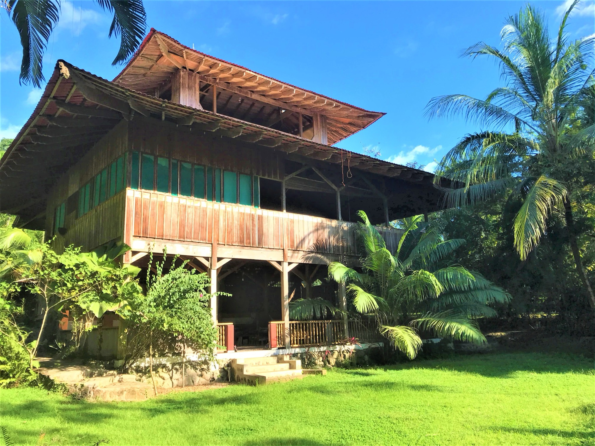
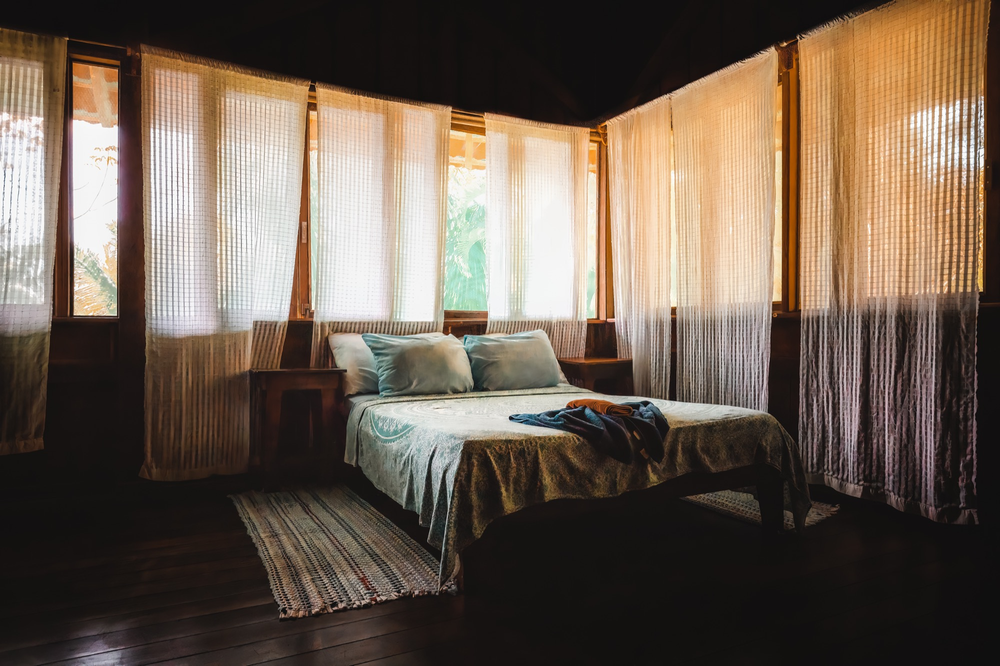
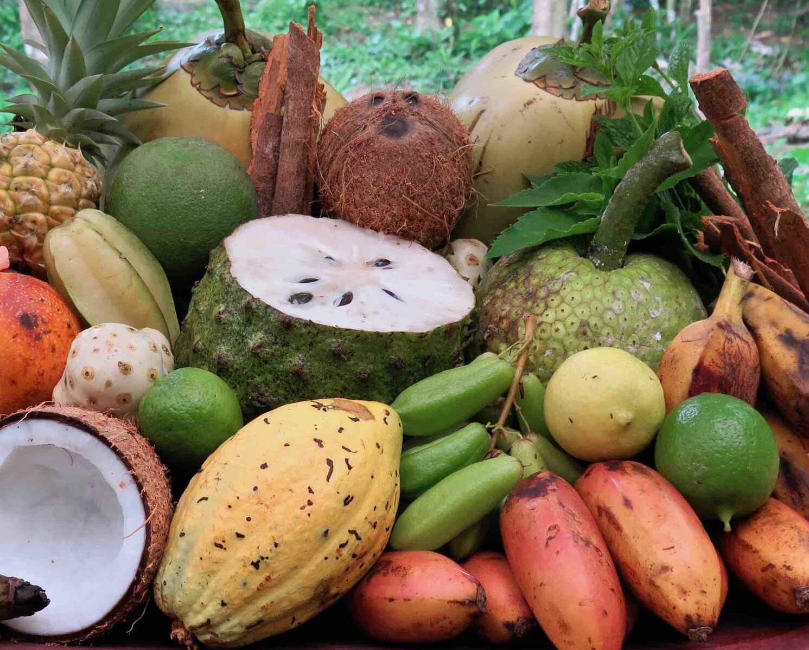

2 guestsGarden View
Garden Bungalow
Tucked into the ethnobotanical garden, ten metres from the breakfast hall. King bed, private veranda with hammock, outdoor rinse shower for after the beach.
Enquire
A three-storey wooden lodge and a handful of cabins scattered into the garden — built by hand from reclaimed hardwoods and bamboo, off-grid, naturally cooled, and a few steps from the surf.
The first thing you'll notice is the silence — and then, the absence of silence: the surf, the cicadas, the howler monkeys at dawn. We built the Lapa Lapa Lodge, our three-storey timber building, fourteen metres into the canopy without taking down a single mature tree. Around it sit our ten cabins and bungalows, far enough apart that you'll hear your neighbour's wind chime but not their conversation.
The whole place was designed for thirty guests. That's the limit, even on our busiest weeks. We like it that way.
Every room has an en-suite bathroom with hot water, a ceiling fan, a memory-foam bed under mosquito netting, and a private veranda or terrace with a hammock. Wi-Fi works at the main lodge — we keep it light on purpose.
Tucked into the ethnobotanical garden, ten metres from the breakfast hall. King bed, private veranda with hammock, outdoor rinse shower for after the beach.
Enquire
On the rise above the beach, with a wide deck angled at the Pacific. Whale-watching from your hammock between June and December, if you're lucky.
Enquire
A two-room suite on the second floor of the main lodge. Two queens or a king plus two singles, two bathrooms, and the largest balcony on the property.
EnquireRates include three garden meals daily, complimentary cacao, tea and coffee, kayaks and snorkel gear, and the daily naturalist walk. Write to us for current rates.
The main lodge is the heart of the property — three floors of open-air timber rising fourteen metres into the trees, every column a fallen hardwood, every joint hand-cut. The Dharma Hall is on the ground floor: a hundred-and-fifty-square-metre practice space where we host yoga, breathwork, council and ceremony.
Above it, a library and reading lounge full of hammocks and field guides. Above that, our family suite and a wide open deck where most of the lodge's morning life happens — guests, staff, the occasional toucan in the rafters.
The Dharma Hall & programs

Our kitchen cooks around the seasons. Mornings open with slow oats and pineapple, tropical fruit salads of fresh mango and papaya, eggs from our hens, and ceremonial cacao. Lunches lean light — gazpachos, ceviches of plantain and hearts of palm, garden salads.
Dinner is the long table: baked chicken in coconut milk, curried vegetables with wild-harvested turmeric and ginger, line-caught Pacific fish, whole-grain rice from the mountain neighbours. We're happy to cook around any diet — vegan, vegetarian, gluten-free, allergies — just tell us when you book.
Off-grid from day one. A hybrid solar array and a small upstream micro-hydro turbine power the whole property.
Drinking water comes from a protected spring on the property, gravity-fed and filtered. Rainwater feeds the gardens.
Every structure is reclaimed hardwood, bamboo and river stone. No old-growth tree was felled for the lodge.
About seventy percent of what arrives at the table comes from the property; the rest from neighbour farms within ten kilometres.
Reaching us from San José takes most of a morning, on purpose. We can arrange every leg.
San Josecito Beach · South of Drake Bay
Osa Peninsula · Puntarenas, Costa Rica